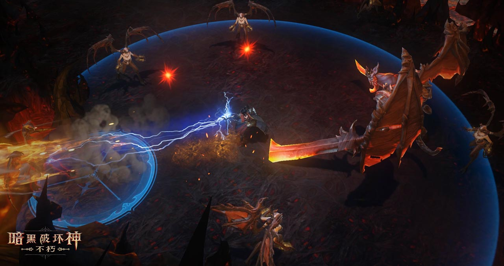

野蛮的流浪者，使用重型武器的专家。
《暗黑破坏神® ：不朽TM 》是暴雪娱乐与网易游戏联合开发的移动端大型多人在线动作角色扮演游戏（MMOARPG），即将登陆iPhone、iPad和Android平台。
坚守庇护之地的世界，随时随地体验线上冒险。
加入世界中的玩家社区，与他们并肩作战，驱除远古的恶魔，探索危险的地下城，当然还能获得传奇宝物。
《暗黑破坏神：不朽》的故事设定在
《暗黑破坏神®II：毁灭之王®》和《暗黑破坏神III®》之间
世界之石已经破碎，但它被污染的碎片中仍然蕴含着强大的力量。迪亚波罗的爪牙们想要利用这股力量来复活恐惧之王。
人们以为大天使泰瑞尔已死，独自面对泰瑞尔的行为所造成的后果。被污染的世界之石的碎片腐化了大地，招来了远古的恶魔，他们也在收集世界之石的力量，想要用它来控制人类。
在《暗黑破坏神II》中，恐惧魔王迪亚波罗被打败，他的灵魂石也在地狱熔炉中化为碎片。
在《暗黑破坏神II：毁灭之王》中，迪亚波罗的兄弟巴尔污染了世界之石，泰瑞尔不得不将它摧毁。
在《暗黑破坏神：不朽》中, 世界之石的碎片腐化了大地，恶魔蜂拥而入， 入侵庇护之地。
在《暗黑破坏神III》中，一颗流星落到了新崔斯特姆，揭示了古老的末世预言。
在《暗黑破坏神III：夺魂之镰》中，奈非天阻止了死亡天使马萨伊尔，并面对自己的命运。
独特的区域和地下城
从平静的沃桑小镇到拜尔芬的丛林小岛，再到佐敦·库勒的图书馆，《暗黑破坏神：不朽》的每个区域都有新的挑战和熟悉的面孔。
你会选择在沙萨之海帮助维拉和她的老师，还是深入菲尔（一位阿卡拉特信徒）之墓？或者前往女爵的遗忘高塔，再一次阻止她的黑暗统治？一切皆有可能，选择尽在于你。
大型多人动作游戏尽在掌中
在庇护之地与其他恶魔猎人见面，与他们结伴同行，一起踏入深邃而危险的地下城。你可以拜访社交中心威斯特玛，还能在再一次踏上冒险之前与当地的商人进行交易。
你可以轻松地加入或离开队伍，参与全世界的动态活动，与其他英雄组队，打败斯卡恩的爪牙，获得丰厚的奖励。
威斯特玛
探索威斯特玛尚未被马萨伊尔腐化的蜿蜒街道。这个城市总有热闹的活动，因为世界各地的访客都赶来领略它迷人的风采，浏览当地的名胜，享受更多的精彩。
威斯特玛可以满足你冒险的一切需求，你可以使用自己的储藏箱、和商贩交易。更重要的是，你可以在这里遇到同路人，同时这里也是你落脚休息的地方。
专为移动设计
全新打造的《暗黑破坏神：不朽》将为玩家带来在触屏设备上玩《暗黑破坏神》的真实体验。直观的操作、手势和触屏控制让玩家可以全面掌控自己的英雄，消灭无尽恶魔的体验就如同使用手柄和键盘一样轻松。
瞄准你的敌人
方向控制让你可以在这个世界中走动自如，用手指按下技能，使用指示器瞄准目标再松开技能，即可轻松消灭来自地狱的恶魔。你可以快速使用药剂来恢复生命，点击屏幕来装备最近获得的物品。
职业
野蛮人是亚瑞特山灾难的幸存者，他们用强大的武器和残忍的攻击来碾碎敌人。
身法迅捷的神圣战士，技艺精湛的功夫大师。
武僧是艾葛罗德之地和一千零一神意志的体现。武僧的进攻迅捷如电，身法无人比肩，可以施展一连串眼花缭乱招式，给予敌人暴风骤雨般的连续打击。
魔法师是叛逆的修法者，他们把自身作为奥能之力的道器。
魔法师会操纵奥能之力从远处发起攻击，将敌人瓦解并送入湮灭，把他们冰冻直到他们支离破碎，或者把他们烧成灰烬。
身材高大的巨人，愤怒的狂热信徒。
圣教军的武器是信仰。他们身披坚不可摧的战甲，挥舞着无情的连枷；他们行走于大地之上，驱除邪恶，用最纯粹的目的统治战场。
复仇的追踪者，使用手弩的好手。
猎魔人是无情的侠义之士，会从远处发起进攻；他们是经过训练的恶魔猎人，却身负悲惨的过去——他们的家人被烈焰地狱的恶魔所害。
死灵大军的指挥官，生与死的操控者。
拉斯玛的祭司想要为这个世界带来平衡。他们驾驭生与死的力量，让庇护之地免于地狱和天堂的影响。
斯卡恩，恐惧使者
这个恶魔名为斯卡恩，恐惧使者——他曾是迪亚波罗最强大的副官，如今正在集结新的恶魔大军。斯卡恩想要收集被污染的世界之石的碎片，并用它们复活迪亚波罗，重新点燃天使与恶魔的永恒之战。 趁世界之石毁灭之际兴风作浪的不只有斯卡恩。新生的巫师会人数众多，黑暗邪教徒四处游荡，在所经之地散布腐化。
远古恐怖重生
从《暗黑破坏神II》中选取的恶魔，例如恶心的野兽邪恶之母——它们拥有剃刀般的利爪，还能产下致命的幼崽。除此之外，《暗黑破坏神：不朽》还将呈现许多类似的怪物和全新的敌人。
敬请关注我们将在之后公布的更多信息……还要小心那些潜伏在暗影之中的东西。
抢先体验《暗黑破坏神：不朽》
抢先注册的玩家将有机会参与未来的游戏测试、获得专属游戏内奖励，并收到最新动态和更新。
点击下方按钮即表示你同意接收来自运营方网易游戏的新闻和活动信息。
敬请关注此页面，了解《暗黑破坏神：不朽》的开发进展。
视频
图片

©2018暴雪娱乐有限公司与网易公司版权所有。
Apple和Apple标识是Apple Inc.在美国和/或其他国家的商标或注册商标。App Store是 Apple Inc.的服务商标。